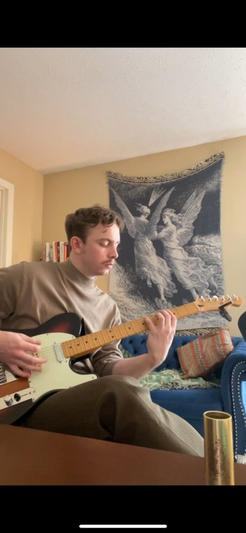
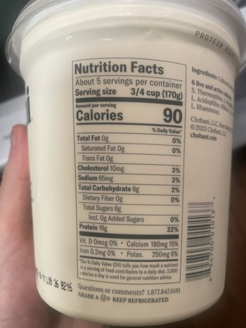
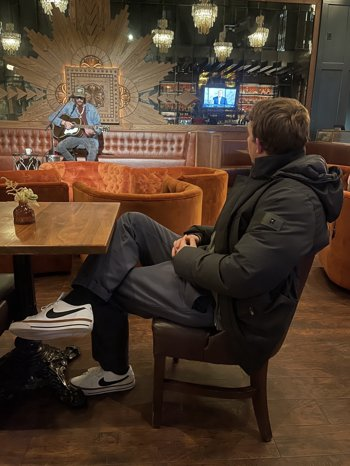
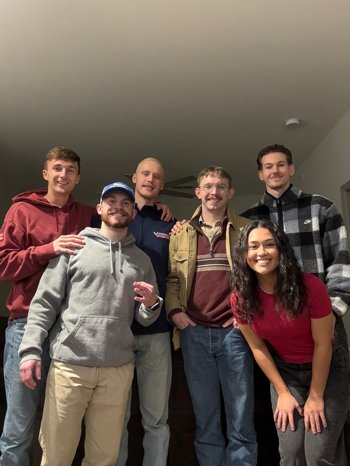
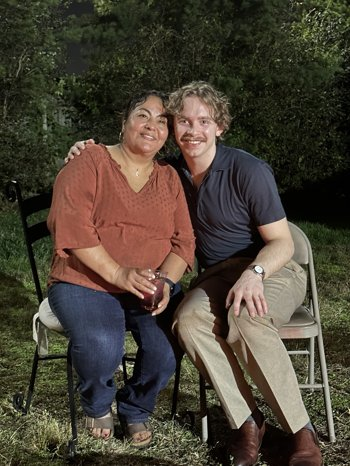

Hello! I'm a musician, nurse, coder and all‑around creative based in Chicago. I love writing and recording concept albums, practicing guitar, exploring philosophy, and caring for patients in the progressive care unit.
When I'm not in the hospital or the studio, you'll find me learning Spanish, coding small apps to improve my workflow, or hanging out with friends and family.
Music fuels my soul. I'm an avid guitarist and songwriter with a special interest in concept albums. I draw inspiration from blues, rock and indie styles and I'm currently working on a project exploring themes of light and shadow.

As a registered nurse working in a progressive care unit, I cherish the opportunity to care for patients and deepen my clinical skills. Long term, I'm preparing for a career in anesthesia. I enjoy analyzing telemetry strips, learning pharmacology and discussing complex physiology.

Beyond music and nursing, I'm passionate about coding and exploring technology. I build small apps to track my guitar practice, experiment with AI agents and design websites like this one. I'm fascinated by how technology can enhance creativity and productivity.

Life isn't all work and practice. The people around me shape who I am and provide the laughs and adventures that inspire my songs. I cherish time spent with friends and family—whether we're at a concert, cooking dinner together or celebrating special events.

